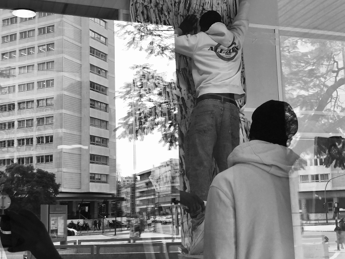

“je ne sais plus qui je suis”,
Wallid

drawing of Anne Marie T, painting her house in Senegal.

preparing our first expo, les Amarres à Paris.
“Mesmo Mundo”, is an independent and solidarity project that grew at Les Amarres, in Paris, that focuses in shedding some light on experiences such as migration and exile from the very voices of the people who live it. Its a project that was carved by the distance between the “here and somewhere else”.
This project is now running in Lisbon, "Do Mesmo Mundo: Bridges to Invisible Borders", will be exhibited this year in various cultural spaces: 10-31 march, espaço DGEstE Alvalade, 17-19 May, Festival Passagens and from 15 November till 15 January 2026, Um Teadro de Cada Bairro - Coruchéus.
“je ne sais plus qui je suis”,
Wallid
"I don't know who I am. I am defeated inside. Sadness and fear and joy are my friends. I see a beautiful face and I feel afraid when I look at it, and I see another face and I feel happy when I see it. On the faces I see the faces of my mother and my daughter and my grandmother. In some faces I see enemies of humanity who kill good people for money and out of jealousy and racism. I didn't choose my path. I didn't choose my roots. I found myself in the field of civil and regional war created by the killings",
Walid

Mounir painting himself in front of a mirror, paris 2024

“an accident in the sea”
|
Mozmel in re-used wood, |

“I love brown and beige clothes but because
of the wars I wear what I find that fits my size.”
Wallid
Works of Mozmel, Mohamad, Abiti in reused materials
explaining what is inside a painting


“I am neither white, nor black,
nor red.”
march 2024
at “les amarres”

Mamadu painted by
Monsur
|
DGEstE Lisbon, |
 |


“Um homem e o seu
cavalo”,
Modom
drawings in blue pencil, Lamin